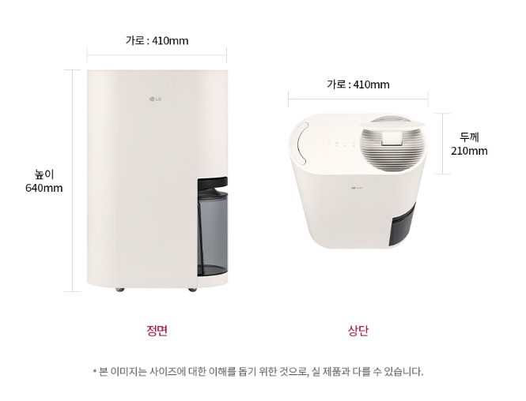
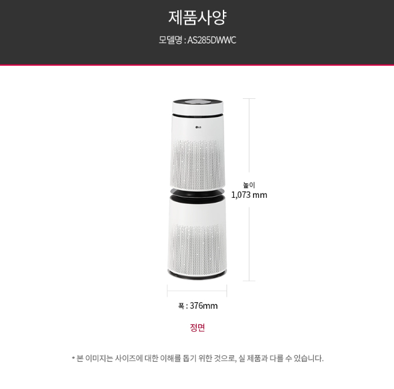

LG 공기청정기·제습기 세트 가격 확인
세트 구성과 모델, 할인 혜택은 판매 시점에 따라 달라질 수 있으므로 실제 판매 페이지에서 최신 조건을 확인하세요.
LG 에어케어 세트 최저가 확인하기 →1. 공기청정기와 제습기를 함께 사용하는 이유
공기청정기와 제습기는 비슷한 모양의 에어케어 가전이지만 담당하는 역할은 서로 다릅니다. 공기청정기는 실내 공기를 빨아들여 필터를 통과시키면서 미세먼지와 생활먼지, 냄새 원인 물질 등을 관리하는 제품입니다. 반면 제습기는 공기 중 수분을 응축해 물통에 모으면서 실내 습도를 낮추는 역할을 합니다.
공기청정기만 사용한다고 실내 습도가 낮아지는 것은 아니고, 제습기만 사용한다고 미세먼지와 생활냄새가 모두 걸러지는 것도 아닙니다. 황사와 미세먼지가 신경 쓰이는 계절에는 공기청정기를, 장마철이나 빨래를 실내에서 건조하는 날에는 제습기를 중심으로 사용하면 계절과 상황에 맞는 실내 환경 관리가 가능합니다.

2. LG 퓨리케어 공기청정기의 공기 정화 구조
LG 퓨리케어 공기청정기 제품군은 실내 공기를 흡입해 여러 단계의 필터를 통과시킨 뒤 정화된 공기를 다시 내보내는 방식으로 작동합니다. 360˚형 제품은 제품 주변의 공기를 여러 방향에서 흡입할 수 있도록 설계되어 거실처럼 비교적 넓은 생활공간에서 활용하기 좋습니다.
실제 청정 성능을 비교할 때는 제품 외관이나 크기보다 표준사용면적을 먼저 확인해야 합니다. 거실과 주방이 연결된 공간이나 문을 열어둔 여러 방을 한 대로 관리하려는 경우에는 사용할 공간보다 여유 있는 청정면적을 선택하는 것이 좋습니다.
필터 성능과 관리
공기청정기는 필터 상태가 성능에 직접적인 영향을 줍니다. 프리필터에는 큰 먼지와 머리카락이 쌓이고, 내부 집진필터와 탈취필터는 미세먼지와 생활냄새 관리에 사용됩니다. 필터가 오염된 상태로 장시간 작동하면 공기 흐름이 줄어들 수 있으므로 주기적인 먼지 제거와 교체 시기 확인이 필요합니다.
필터 구성과 교체주기는 세트에 포함된 공기청정기 모델에 따라 달라질 수 있습니다. 특히 물세척이 가능한 프리필터와 물세척하면 안 되는 내부 필터를 구분해야 하며, 정확한 관리 방법은 제품 사용설명서를 따르는 것이 안전합니다.
센서와 자동 운전
공기질 센서가 적용된 제품은 실내 먼지나 냄새 상태를 감지해 운전 세기를 자동으로 조절할 수 있습니다. 공기 상태가 나쁠 때는 풍량을 높이고, 공기가 깨끗해지면 풍량을 낮춰 불필요한 소음과 전력 사용을 줄이는 데 도움이 됩니다.
흡입구와 토출구 주변이 가구나 커튼으로 막히면 공기 순환이 원활하지 않을 수 있습니다. 제품 사용설명서에 표시된 설치 간격을 확보하고 필터 덮개를 열 수 있는 공간도 남겨두세요.
공기청정기와 제습기 외에 무선청소기, 이어폰과 TV 등 다른 제품의 구매 가이드도 확인할 수 있습니다.
가전·디지털 전체 상품 보기 →3. LG 휘센 오브제컬렉션 제습기의 제습 성능
제습기는 실내의 습한 공기를 흡입한 뒤 수분을 응축해 물통에 모으고, 상대적으로 건조해진 공기를 다시 내보내는 방식으로 작동합니다. 비가 자주 내리는 장마철이나 환기가 어려운 공간, 빨래를 실내에서 건조할 때 활용도가 높습니다.
제습 성능을 비교할 때는 일일 제습용량을 확인해야 합니다. 제습용량이 클수록 일정 조건에서 더 많은 수분을 제거할 수 있지만, 제품 크기와 소비전력, 소음도 함께 달라질 수 있습니다. 세트에 포함된 휘센 제습기의 정확한 모델번호를 확인하고 사용할 공간의 크기와 비교하는 것이 중요합니다.
희망습도와 자동 운전
희망습도를 설정할 수 있는 제품은 실내가 설정한 습도에 가까워지면 운전을 조절해 과도한 제습을 줄이는 데 도움이 됩니다. 습도를 너무 낮게 유지하면 피부와 호흡기가 건조하게 느껴질 수 있으므로 계절과 생활환경에 맞춰 적절한 수준으로 사용하는 것이 좋습니다.
저소음과 의류 건조 활용
취침 시간이나 조용한 공간에서는 저소음 운전 모드를 활용할 수 있습니다. 실내 빨래 건조 시에는 제습기의 바람이 빨래 사이를 통과하도록 배치하고, 문과 창문을 닫아 공간을 제한하면 건조 효율을 높이는 데 도움이 됩니다.
다만 제습기 토출구를 젖은 빨래로 가리거나 제품과 빨래를 지나치게 가깝게 배치하면 공기 순환에 방해가 될 수 있으므로 충분한 거리를 확보해야 합니다.
세트에 포함된 정확한 모델 확인하기
공기청정기의 청정면적과 제습기의 일일 제습용량은 포함 모델에 따라 달라지므로 구매 페이지에서 각각 확인하세요.
LG 공기청정기·제습기 구성 확인하기 →
4. 물통과 연속배수 관리
제습기는 공기 중에서 제거한 수분을 물통에 모으기 때문에 물통 관리가 필요합니다. 실내 습도가 높거나 장시간 작동하면 물통이 빠르게 찰 수 있으며, 만수 상태가 되면 안전을 위해 운전을 멈추는 제품이 많습니다.
물통을 자주 비우기 어렵다면 배수 호스를 연결하는 연속배수 기능을 지원하는지 확인하는 것이 좋습니다. 연속배수를 사용할 때는 배수구가 제품보다 낮은 위치에 있어야 자연스럽게 물이 흐를 수 있으며, 호스가 꺾이거나 빠지지 않도록 설치해야 합니다.
제습기 내부 건조
제습 운전 후에는 제품 내부에 수분이 남을 수 있습니다. 자동건조 기능이 포함된 모델은 운전 종료 후 내부의 습기를 줄이는 데 도움을 줄 수 있습니다. 장기간 사용하지 않을 때는 물통의 물을 비우고 완전히 건조한 뒤 보관하는 것이 좋습니다.
5. 두 제품을 함께 배치할 때 주의할 점
공기청정기와 제습기를 같은 공간에서 사용할 수 있지만, 두 제품의 흡입구와 토출구가 서로 마주 보거나 가구에 가려지지 않도록 배치해야 합니다. 제품 사이에 충분한 간격을 두고 공기가 공간 전체를 순환할 수 있도록 설치하는 것이 좋습니다.
제습기의 토출 공기는 작동 과정에서 다소 따뜻하게 느껴질 수 있습니다. 이는 실내 열을 제거하는 에어컨과 작동 목적이 다르기 때문이며, 제습기를 사용한다고 실내 온도가 낮아지는 것은 아닙니다. 여름철에는 에어컨과 함께 상황에 맞춰 사용하는 방법도 있습니다.
| 공기청정기 역할 | 실내 공기를 필터로 순환시켜 미세먼지와 생활먼지, 냄새 원인 물질 등을 관리합니다. |
|---|---|
| 제습기 역할 | 공기 중 수분을 물통으로 모아 실내 습도를 낮추고 빨래 건조와 장마철 습기 관리에 활용합니다. |
| 함께 사용할 때 | 각 제품의 흡입구와 토출구가 막히지 않도록 간격을 두고, 사용할 공간에 맞는 운전 모드를 선택합니다. |
| 관리 항목 | 공기청정기는 필터를, 제습기는 물통과 흡입구 및 내부 건조 상태를 주기적으로 관리해야 합니다. |
6. 세트 구매가 잘 맞는 사용자
- 미세먼지와 실내 습도를 계절별로 함께 관리하고 싶은 가정
- 장마철 빨래 건조와 곰팡이 예방을 중요하게 생각하는 경우
- 거실이나 넓은 생활공간에 에어케어 가전을 새로 구성하는 경우
- LG 오브제컬렉션 디자인으로 가전 분위기를 맞추고 싶은 경우
- 각 제품을 따로 구매하는 것보다 세트 혜택을 비교하고 싶은 경우
7. 구매 전에 반드시 확인할 체크리스트
- 공기청정기와 제습기의 정확한 모델번호를 각각 확인합니다.
- 공기청정기의 표준사용면적이 사용할 공간에 맞는지 확인합니다.
- 제습기의 일일 제습용량과 권장 사용면적을 확인합니다.
- 세트 이미지와 실제 제공되는 제품의 색상이 같은지 확인합니다.
- 공기청정기 필터의 종류와 교체 비용을 확인합니다.
- 제습기 물통 용량과 연속배수 지원 여부를 확인합니다.
- 저소음, 의류 건조와 자동건조 등 필요한 기능을 확인합니다.
- LG ThinQ 연결 기능이 필요한 경우 지원 모델인지 확인합니다.
- 각 제품이 개별 배송되는지 설치 일정이 같은지 확인합니다.
- 반품과 교환 조건, 제조사 보증기간을 확인합니다.
공기와 습도 관리뿐 아니라 바닥 청소를 위한 제품을 찾고 있다면 비브르 무선청소기 구매 가이드도 살펴볼 수 있습니다.
비브르 무선청소기 구매 가이드 보기 →LG 공기청정기·제습기 세트 자주 묻는 질문
공기청정기와 제습기를 동시에 작동해도 되나요?
각 제품의 흡입구와 토출구가 가려지지 않도록 충분한 간격을 확보하면 함께 사용할 수 있습니다. 정확한 설치 간격과 사용 조건은 각 제품의 사용설명서를 확인하세요.
공기청정기가 실내 습도도 낮춰주나요?
공기청정기의 주된 역할은 공기를 필터로 순환시키는 것이므로 제습기처럼 공기 중 수분을 물로 제거하지 않습니다. 습도 관리가 필요할 때는 제습기를 함께 사용하는 것이 좋습니다.
제습기가 공기청정기 역할도 하나요?
제습기 흡입구에 기본적인 먼지 필터가 있을 수 있지만, 미세먼지와 냄새를 전문적으로 관리하는 공기청정기와 목적이 다릅니다. 두 제품의 기능을 동일하게 보기는 어렵습니다.
세트 상품은 모두 같은 모델로 배송되나요?
판매 시기와 옵션에 따라 모델, 색상과 구성품이 달라질 수 있습니다. 주문 전 판매 페이지와 최종 결제 화면에 표시된 공기청정기 및 제습기 모델번호를 각각 확인하세요.
제습기 물통은 매일 비워야 하나요?
실내 습도와 운전시간에 따라 물이 차는 속도가 다릅니다. 만수 알림이 나타나면 물통을 비우고, 장시간 연속 운전이 필요하다면 연속배수 지원 여부를 확인하세요.
공기청정기 필터는 물로 씻어도 되나요?
필터 종류에 따라 세척 가능 여부가 다릅니다. 일반적으로 프리필터와 내부 집진필터의 관리법이 다를 수 있으므로 반드시 포함 모델의 사용설명서를 확인해야 합니다.